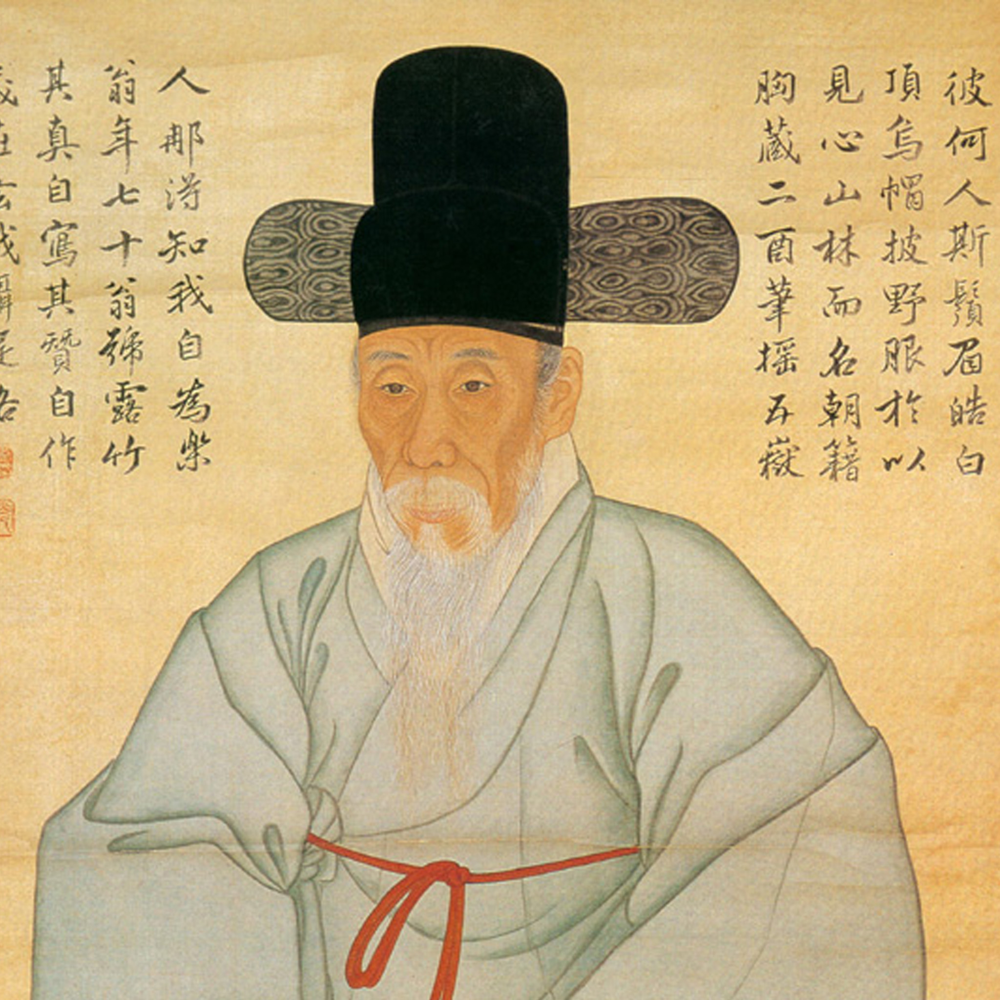
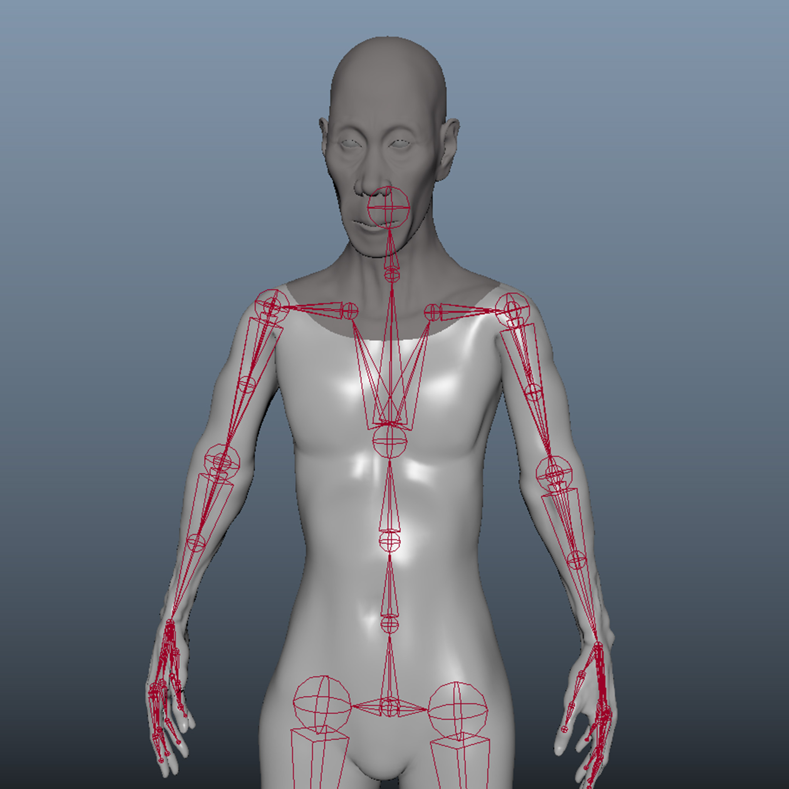
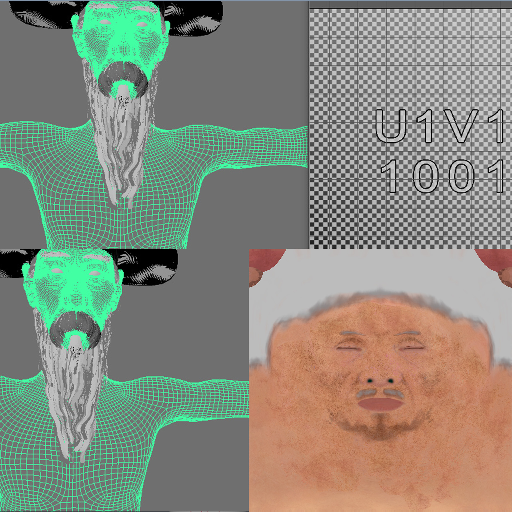
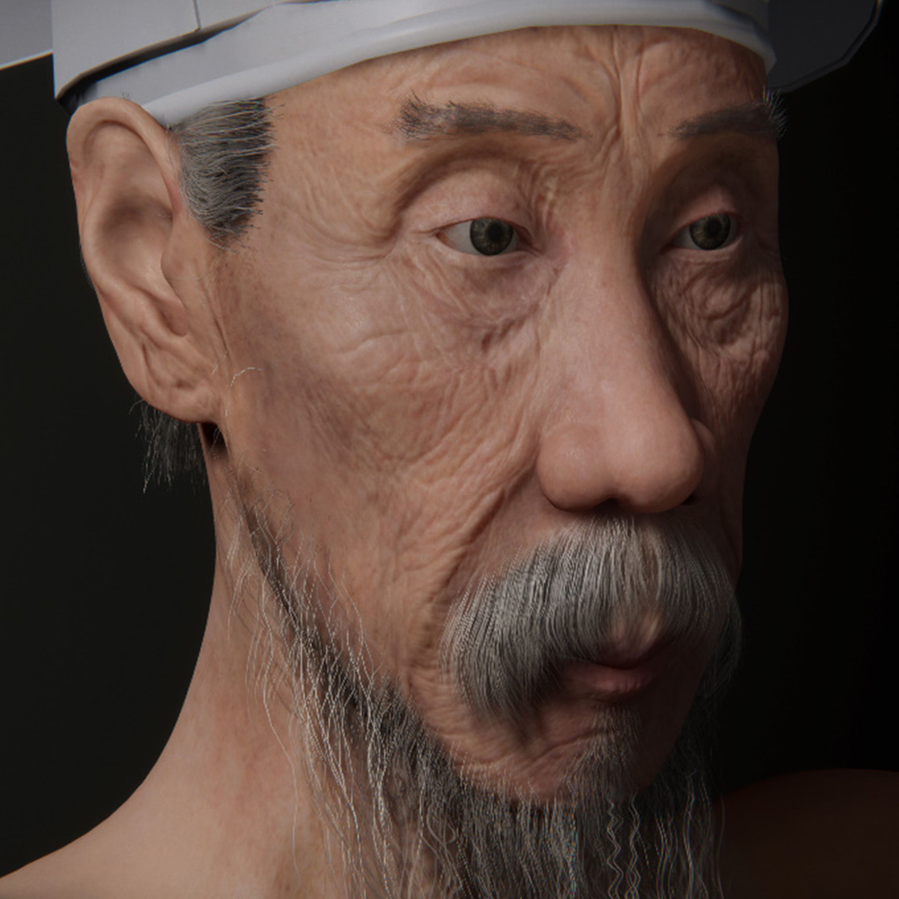
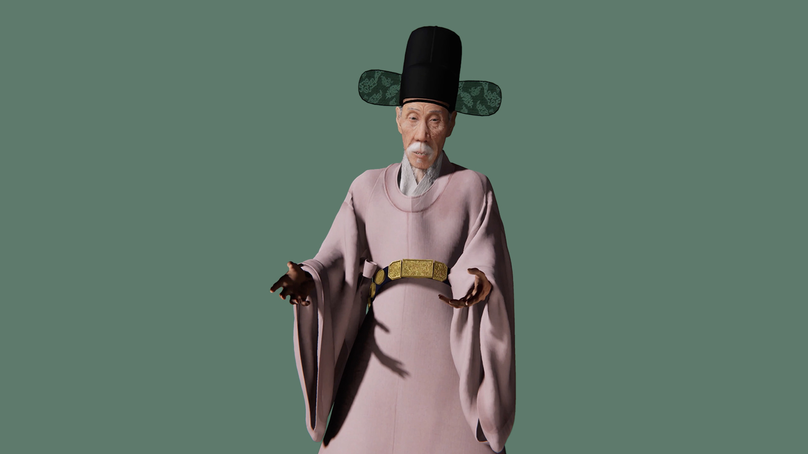

Historical portraits and materials were provided by the Gyeonggi Provincial Museum, serving as primary references for digital reconstruction. The team studied original ink paintings, written records, and academic research on Gang Se-hwang's physical characteristics and mannerisms.




3D facial and body modeling using ZBrush and Maya. Texture mapping, UV unwrapping, and normal map generation. Hair cards and fabric shaders for physically accurate rendering.


Body motion recorded using the OptiTrack system. Facial motion captured through Apple ARKit, synchronizing expression and dialogue in real time.


Traditional Korean attire — hanbok, gat hat, and layered robes — modeled and simulated in Blender and Maya, achieving physically accurate fabric movement and draping.


All assets imported into Unity 3D, where interactive animation triggers — buttons, speech recognition, and audience proximity detection — were implemented for real-time responsiveness.


The final AI docent was deployed at the Gyeonggi Provincial Museum, operating in real time as a responsive digital guide. Visitors could engage in conversation, request demonstrations, and pose for commemorative photographs with the digital Gang Se-hwang.
The project explores how historical identity and cultural heritage can persist through technological translation. By reanimating a historical figure within a real-time digital human framework, it demonstrates how AI can serve as a medium of cultural empathy rather than mere replication.
It proposes a new form of Cyborg Museology — a museum paradigm where memory becomes interactive and heritage evolves through human–machine coexistence.